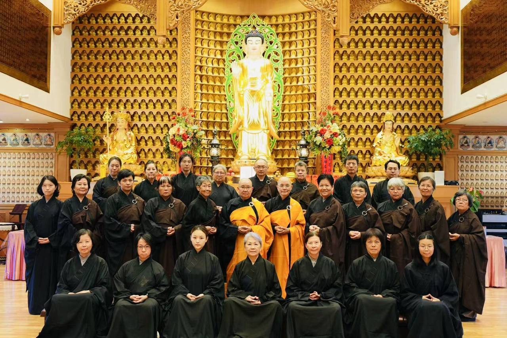
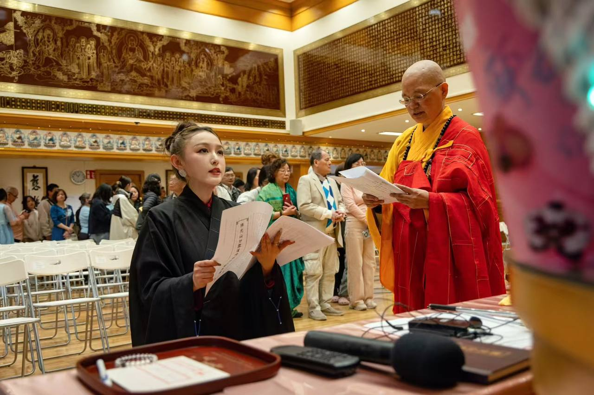

Blygatan 3, 195 72 Rosersberg
斯德哥尔摩北部，距市中心约30分钟车程
认识人间佛教
1927 — 2023 · 佛光山开山祖师
「我一生，人家都以为我聚众，其实我是在为社会培养人才。我一生，人家都以为我在建寺庙，其实我是在建设一个让大家都能安心修行的环境。」
三好运动
以行动帮助他人，行善布施。无论大小，每一个善举都在改变世界。
以温暖的语言鼓励他人，赞美他人。一句好话，能点亮一个人的一天。
以善念对待一切，心怀感恩。善心是一切善行善言的根源。
四给精神
让每个人相信自己的力量
以欢喜心面对世界
为迷茫的人点亮一盏灯
随时随地助人为乐
道场生活
瑞典佛光山位于斯德哥尔摩北部 Rosersberg，是北欧弘扬人间佛教的重要道场。这里定期举办禅修、法会、佛学讲座、节日庆典等活动，欢迎所有人参与体验。


佛学经典
般若波罗蜜多心经
「色不异空，空不异色」—— 260字浓缩般若智慧的精华，是最广为人知的佛教经典。
金刚般若波罗蜜经
「一切有为法，如梦幻泡影」—— 教导我们放下执着，以金刚般的智慧破除一切烦恼。
妙法莲华经
「一切众生皆能成佛」—— 佛教最重要的经典之一，开显人人皆有佛性的究竟教法。
佛说阿弥陀经
净土法门的根本经典，描绘西方极乐世界的庄严与阿弥陀佛的无量光明。
六祖大师法宝坛经
「菩提本无树，明镜亦非台」—— 禅宗六祖惠能大师的开示录，直指人心，见性成佛。
人间佛教的当代开示
星云大师一生著作超过两千万字，涵盖佛学、人生、管理、艺术等领域，是学习人间佛教的最佳指南。
参访我们